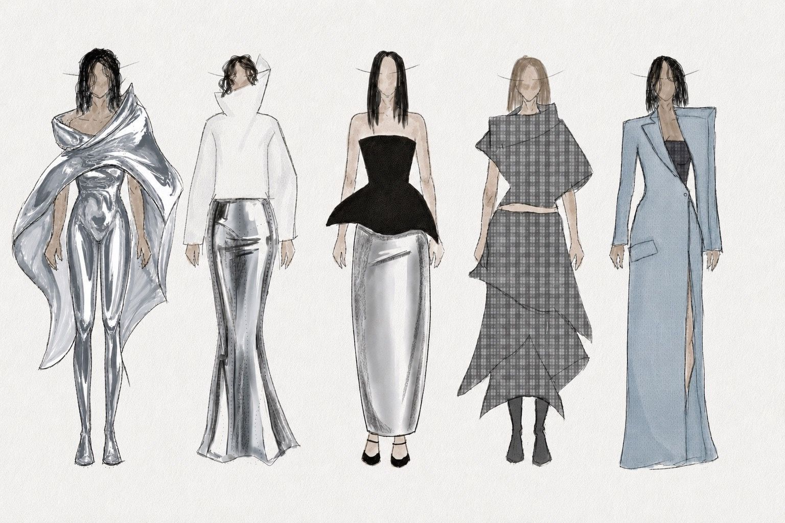
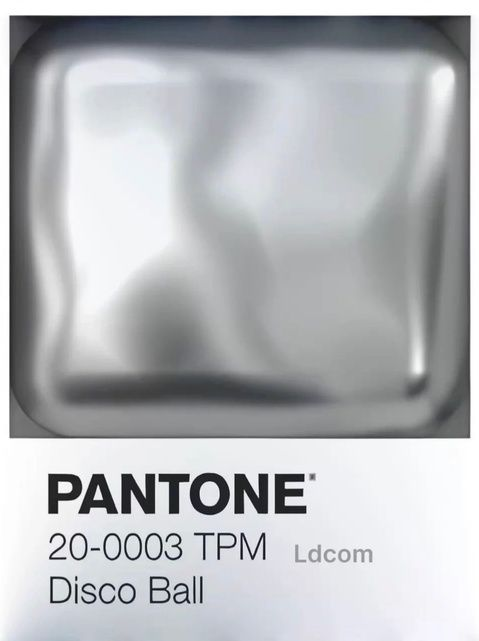
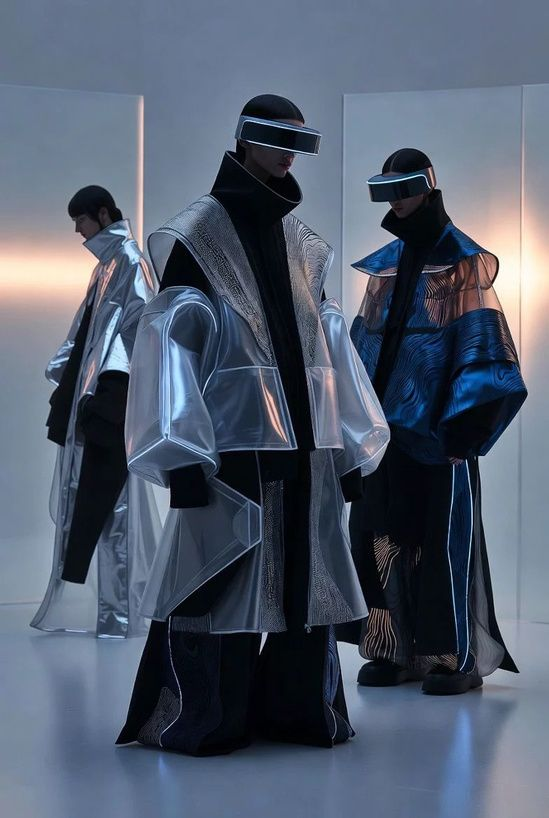
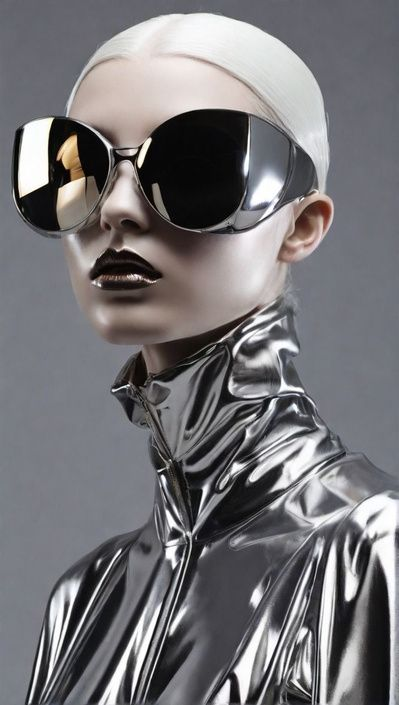
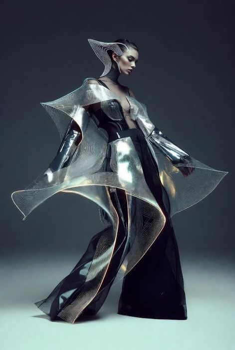

Otimismo
cético.
Uma leitura do consumidor do futuro, para 2027: a fascinação pela tecnologia e a desconfiança sobre até onde ela vai.
“Acreditar no futuro, mas questionar até onde ele pode nos levar.”
São pessoas que se encantam com a inteligência artificial e a inovação, mas questionam o que pode acontecer com a privacidade e a manipulação. Querem acreditar, mas com segurança e confiança primeiro.
Isso cria consumidores críticos: em vez de aceitar as propostas das marcas, pesquisam, analisam e cobram verdade, equilíbrio e responsabilidade.
- Esperança no futuro
- Tecnologia como evolução
- Inovação
- Sustentabilidade inteligente
- Medo do futuro
- Excesso de tecnologia
- Inteligência artificial sem limites
- Desconfiança do hiperconsumo
- Metalizado, prata, cromado
- Preto e transparência
- Formas futuristas
- Silhuetas estruturadas

As silhuetas marcadas mostram o medo e a intensidade do avanço da tecnologia. As cores frias e metálicas representam o desejo por ela, mesmo com medo.
- #0D0007
- #4E4E50
- #8698A6
- #97969B
- #CCCCD6
- #FEFEFF




Imagens de referência do moodboard de pesquisa.
Pesquisa de Ana Clara Martins para o projeto Emoções: Consumidor do Futuro 2027 (com Bruna Lustosa e Gabriela L. Bezerra) / Bacharelado em Design de Moda, Senac / Prof.ª Viviane Torres Kozesinski / Fonte: WGSN